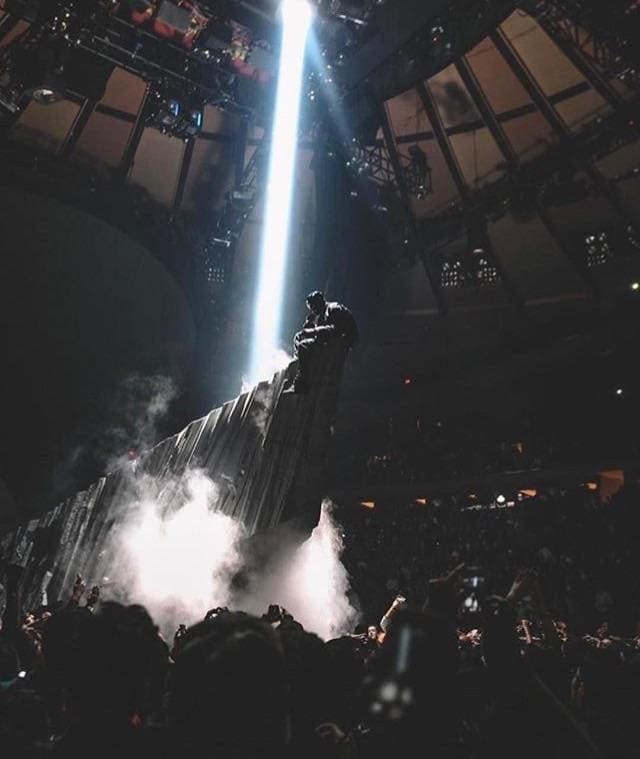

THE_ERAS_TOUR.HTML
Here is a list of my favorite eras:
Bell Labs
Bell Laboratory is an R&D lab that has made significant contributions in the field of computers and electronics. They invented the transistor, solar cell, laser, designed and built the first communication satellite: Telstar I. They also gave evidence of the Big Bang Theory by measuring background radiation.
But the main reason why they are on this list is because they fuelled the golden age of computers. They made C, UNIX, hamming code, information theory, digital signal processing, etc...
Early 2000 Japan
Anime, Video games, JDM cars, mobile phones, and the internet, were all on the rise. Japan was young and the hipsters were experimenting without fear. Smokey Nagata founded Top Secret and started working on his V12 supra. I can't look at any 2000s Japan photo without wishing I was there.
Yeezus
My Beautiful Dark Twisted Fantasy by Kanye is considered to be one of the best Hip-Hop albums ever. Kanye was at his peak when he dropped this album. He had crazy influence, and a huge fan following. Then he dropped Yeezus and the world hated it. It had the most boring album cover, and most of the listeners could not get past the first song On Sight. I remember when I first listened to this album, I was scared of it. After a few listens and watching him perform the songs live, I am now convinced that the Yeezus era is Kanye's artistically best era. The live performance of Yeezus is something I wish I could experience. The stage design, music, and Kanye's aesthetic during the Yeezus era were something that the world was not ready for.
